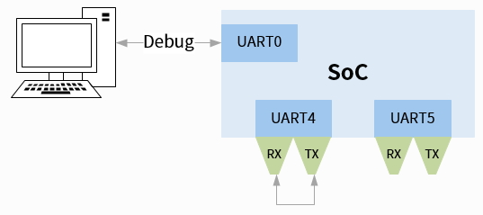
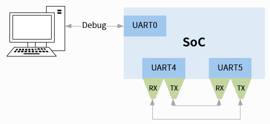
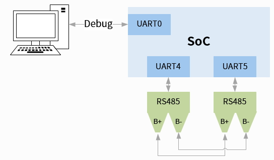

测试指南
15 Jan 2024
Read time: 3 minute(s)
一般开发板的首要工作是调试。
准备工作：
- 硬件：
- PC：用于和开发板进行交互
- 测试板：3 个以上 UART 端口的测试板
- 连接线：用于连接 UART 的 RX/TX 端口
- 软件
- PC 串口软件：用于 PC 和开发板进行串口通信
- test_uart：AIC 的 UART 测试工具，内嵌在 SDK 中，在根目录下通过 make menuconfig
可以选择编译到系统
ArtInChip packages Sample code [*] test-uart
遵照以下步骤执行测试：
- 单端口的环路测试：UARTn TX to UARTn RX
- 双端口的环路测试
UARTn to UARTm

RS232 功能测试
- 单端口收发
-
按单端口的环路测试组网，环路 UART4 的 RX/TX
-
使用 test_uart 工具进行测试
test_uart -C /dev/ttyS1 9600 Test Mode: 3:Circle Send Device : /dev/ttyS1 Receive Device : /dev/ttyS1 m_Baudrate : 9600 send data is: 1234567890artinchip0987654321 receive data is: 1234567890artinchip0987654321
-
- 双端口收发
-
按双端口的环路测试组网，环路 UART4 和 UART5 的 RX/TX
-
使用 test_uart 工具进行测试
test_uart -N /dev/ttyS4 /dev/ttyS5 115200 Test Mode: 0:Normal Test Device : /dev/ttyS4 Receive Device : /dev/ttyS5 m_Baudrate : 115200 1970-01-01 08:24:46 ============================================= 1970-01-01 08:24:46 Please input messages you want to send thisisatest 1970-01-01 08:24:49 send data:thisisatest. 1970-01-01 08:24:49 receive data: len = 11: thisisatest
-
RS485 功能测试
RS485 的测试方式和 RS232 类似，有几点不同：
-
端口需要配置为 RS485
-
RS485 需要有外接驱动芯片
-
RS485 为差分信号，因此需要 B+ 对 B+ 环路，B- 对 B- 环路
-
RS485 不能 B+ 环路 B-

兼容性测试
- 串口工具兼容性测试：应该测试在 RS232 模式下，调试口和如下工具的兼容性
-
MobaXterm
-
SecureCRT
-
XShell
-
sscom
-
- RS485 兼容性测试：应测试在 RS485 模式下，SoC 和通用 RS485 模组的兼容性
压力测试
可借助于 test_uart 工具， 采用环路 UART4 和 UART5 的组网，进行压力测试。
测试方法是短时间内进行大量数据的收发，因为 CPU 的读写速度远远高于 UART
的收发，因此可能会有丢包，但模块不应该出现卡死现象。
test_uart -P /dev/ttyS4 /dev/ttyS5 115200Test Mode: 1:Pressure Test
Send Device : /dev/ttyS4
Receive Device : /dev/ttyS5
m_Baudrate : 115200
1970-01-01 08:55:22 type any key to send 100KB稳定性测试
可借助于 test_uart 工具，采用环路 UART4 和 UART5 的组网，进行长时间的稳定性验证。
测试方法是循环进行长时间的数据收发，确认模块是否正常工作和是否有丢包。
test_uart -S /dev/ttyS4 /dev/ttyS5 115200Test Mode: 2:Stability
Send Device : /dev/ttyS4
Receive Device : /dev/ttyS5
m_Baudrate : 115200
1970-01-01 09:08:13 =============== sending =====================
1970-01-01 09:08:13 =============== receiving =====================
1970-01-01 09:08:21 send 64K
1970-01-01 09:08:21 receive 64K
1970-01-01 09:08:29 send 128K
1970-01-01 09:08:29 receive 128K